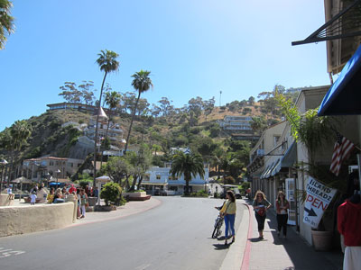
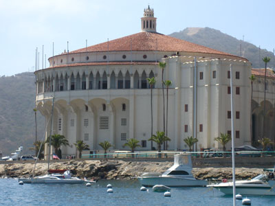
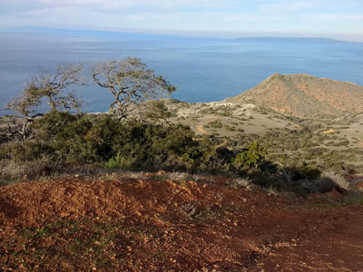
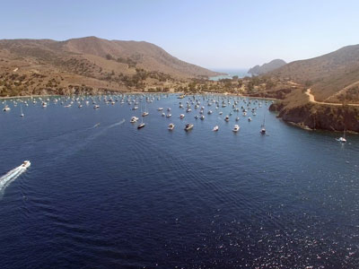
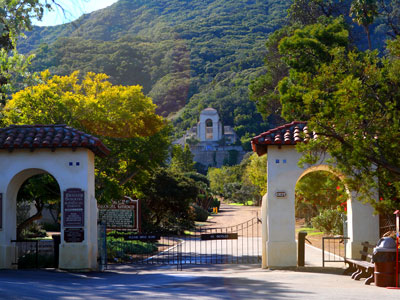

Santa Catalina Island Travel Guide
Rocky island off the coast of Southern California in the Gulf of Santa Catalina
How to Get There
From Los Angeles: Drive south on I-110 S to San Pedro, take the Harbor Boulevard exit, and follow signs to the Catalina Express terminal at Berth 95, then board the ferry for a one-hour ride to Avalon on Santa Catalina Island.
Overview
Santa Catalina Island (Tongva: Pimuu'nga or Pimu; Spanish: Isla Santa Catalina) is a rocky island off the coast of Southern California in the Gulf of Santa Catalina. The island name is often shortened to Catalina Island or just Catalina. The island is 22 mi (35 km) long and 8 mi (13 km) across at its greatest width. The island is located about 29 mi (47 km) south-southwest of Long Beach, California. The highest point on the island is Mount Orizaba (2,097 ft or 639 m). Santa Catalina is part of the Channel Islands of California archipelago and lies within Los Angeles County. Catalina Island is the easternmost of the Channel Islands.
Catalina was originally inhabited and used by many different Southern California Tribes, including the Tongva, who called the island Pimuu'nga or Pimu and referred to themselves as Pimugnans or Pimuvit. The first Europeans to arrive on Catalina claimed it for the Spanish Empire. Over the years, territorial claims to the island transferred it to Mexico and then to the United States. During this time, the island was sporadically used for smuggling, otter hunting, and gold digging, before successfully being developed into a tourist destination by chewing gum magnate William Wrigley Jr. beginning in the 1920s. Since the 1970s, most of the island has been administered by the Catalina Island Conservancy.
Juan Rodríguez Cabrillo
The first European to set foot on the island was the explorer Juan Rodríguez Cabrillo, who sailed in the name of the Spanish crown. On October 7, 1542, he claimed the island for Spain and named it San Salvador after his ship. Over half a century later, another Spanish explorer, Sebastián Vizcaíno, arrived at the island on the eve of Saint Catherine's day (November 24) in 1602. Vizcaino renamed the island in the saint's honor. The colonization of California by the Spanish greatly contributed to the decline of the Pimugnans because of diseases brought by the Spanish from Europe. By the 1830s, the island's entire native population had been forced to the mainland to be enslaved in the missions or to work as ranch hands for the many private land owners.
By the end of the 19th century, the island was almost uninhabited except for a few cattle herders. The first owner to try to develop Avalon into a resort destination was George Shatto, a real estate speculator from Grand Rapids, Michigan. Shatto purchased the island for $200,000 (equivalent to $5.1 million in 2019) from the Lick estate at the height of the real estate boom in Southern California in 1887. Shatto created the settlement that would become Avalon, and can be credited with building the town's first hotel, the original Hotel Metropole, and pier. Despite Shatto's efforts, he defaulted on his loan after only a few years and the island went back to the Lick estate. The sons of Phineas Banning bought the island in 1891 from the estate of James Lick. The Banning brothers fulfilled Shatto's dream of making Avalon a resort community with the construction of numerous tourist facilities. On November 29, 1915, a fire burned half of Avalon's buildings, including six hotels and several clubs. In the face of huge debt related to the fire and the subsequent decline in tourism due to World War I, the Banning brothers were forced to sell the island in shares in 1919.
One of the main investors to purchase shares from the Bannings was chewing-gum magnate William Wrigley, Jr. In 1919, Wrigley bought out nearly every share-holder until he owned controlling interest in the Santa Catalina Island Company. Wrigley invested millions in needed infrastructure and attractions to the island, including the construction of the Catalina Casino which opened on May 29, 1929. Wrigley also sought to bring publicity to the island through events and spectacles. Starting in 1921, the Chicago Cubs, also owned by Wrigley, used the island for the team's spring training. The Cubs continued to use the island for spring training until 1951, except during the war years of 1942 to 1945. Following the death of Wrigley, Jr. in 1932, control of the Santa Catalina Island Company passed down to his son, Philip K. Wrigley, who continued his father's work improving the infrastructure of the island.
On February 15, 1975, Philip Wrigley deeded 42,135 acres (17,051 hectares) of the island from the Santa Catalina Island Company to the Catalina Island Conservancy that he had helped to establish in 1972. This gave the Conservancy control of nearly 90 percent of the island. The balance of the Santa Catalina Island Company that was not deeded to the Conservancy maintains control of much of its resort properties and operations on the island.
Tourism
Over one million people travel to Catalina Island every year. Glass bottom boats tour the reefs and shipwrecks of the area, and scuba diving and snorkeling are popular in the clear water. Lover's Cove, to the east of Avalon, and Descanso Beach, to the west of the Casino, are popular places to dive. At Casino Point is the Avalon Underwater Dive Park, which was the first non-profit underwater park in the United States. The area flying fish and the bright orange Garibaldi are attractions. Parasailing is also offered. Jeep and Bus tours are given of the interior, which is a conservation area managed by the Catalina Island Conservancy. The Catalina Island Chamber of Commerce & Visitors Bureau operates the official island visitor center and provides visitor services assists tourists with any information on how to get to Catalina Island.
Two Harbors is the second, and much smaller, resort village on the island. Located at the isthmus of the island, northwest of Avalon, it is the primary landing spot for those who wish to tour the western half of the island. It is accessible by boat from San Pedro and by bus or boat from Avalon. While tourists rarely have an opportunity to surf, two beaches on the "backside" of Catalina offer good waves: Shark Harbor and Ben Weston Beach. There are also camps called Camp Cherry Valley and Camp Emerald Bay on the northeastern end of the island that offer summer camps for children and Boy Scouts.
Location
The Catalina Island Museum, formerly located in the historic Catalina Casino but since 2016 in a standalone building, is also an attraction as it is the keeper of the island's cultural heritage with collections numbering over 100,000 items and including over 8,000 years of Native American history, over 10,000 photographs and images, a large collection of Catalina-made pottery and tiles, ship models, and much more. The museum features dynamic exhibits on this history, an art gallery, special exhibitions traveling from around the world, and a unique Museum Store. Programs include First Fridays at the Museum, an annual tour of the historic Tuna Club, a Holiday Symphony Concert, book signings, gallery talks, an annual silent film benefit and more.
Transportation
Catalina is serviced by passenger ferries operated by Catalina Express and Catalina Passenger Service. Ferries depart from Orange County in Newport Beach and Dana Point as well as from Los Angeles County in Long Beach and San Pedro. The trip takes approximately an hour. Helicopter service is also available from Long Beach or San Pedro. Catalina has also been an active port of many cruise lines since the 1990s, with Royal Caribbean, Princess Cruises, and Carnival Cruise Lines making the port a regular for Baja cruises. Specifically, Carnival Cruise Lines' Carnival Paradise has made calls to the island every week since 2004, making it the ship to have the most weekly calls to the port, but left in November 2011 and was replaced by Carnival Inspiration. The ships anchor about 1,000 feet off Avalon Harbor. Passengers disembark through shore boat tendering services.
The use of motor vehicles on the island is restricted; there is a limit on the number of registered cars, which translates into a 14-year-long wait list to bring a car to the island.[70] Most residents use golf carts for transportation. Because of these restrictions, there is no regular car vehicle ferry service for visitors. Tourists can hire a taxi from Catalina Transportation Services. Bicycles are also a popular mode of transportation. There are a number of bicycle and golf cart rental agencies on the island. Only the city of Avalon is open to the public without restrictions. The only major road into the back country is Stage Road. Under an agreement with Los Angeles County, the Conservancy has granted an easement to allow day hiking and mountain biking, but visitors must first obtain a permit at the Conservancy's office (on which they declare the parts of the island they intend to visit). Hiking permits are free, whereas bicycle permits are available for a fee.
Overview
Santa Catalina Island, located approximately 22 miles off the Southern California coast, is one of California's most popular island destinations. Unlike many national park islands, Catalina features the resort town of Avalon, the rustic community of Two Harbors, scenic coastal landscapes, inland wilderness, beaches, and a variety of transportation options that make it easy for visitors to explore. Most visitors arrive by ferry, although helicopter service is also available for those seeking a faster and more scenic journey. 【1-9476c8】【2-9a8d95】
Once on the island, visitors can explore on foot, rent golf carts, take guided tours, use shuttle and taxi services, rent bicycles, or travel by water taxi between select coastal destinations. Whether visiting for a day trip or a multi-day getaway, Catalina offers a wide range of transportation choices to suit different budgets and travel styles. 【2-9a8d95】
Getting to Catalina Island
| Transportation | Travel Time | Typical Adult Price | Overview |
|---|---|---|---|
| Catalina Express Ferry | About 1 Hour | Approximately $84 Round Trip | The most popular transportation option with departures from Long Beach, San Pedro, and Dana Point. |
| Catalina Flyer Ferry | About 1 Hour 15 Minutes | Approximately $80-$90 Round Trip | Daily service between Newport Beach and Avalon. |
| Helicopter Service | About 15 Minutes | Typically $175-$250 Each Way | Fastest transportation option with flights from mainland Southern California airports. |
The ferry remains the most popular option due to its affordability and frequent departures. Visitors arriving by ferry often enjoy marine wildlife sightings, including dolphins and seasonal whales, during the crossing. 【3-87f6a4】【2-9a8d95】
Getting Around Avalon
| Transportation Method | Typical Cost | Best For |
|---|---|---|
| Walking | Free | Most attractions in Avalon are within walking distance. |
| Golf Cart Rentals | Approximately $60-$90 Per Hour | Exploring Avalon's hills, viewpoints, and residential areas. |
| Bicycle Rentals | Approximately $20-$40 Per Day | Active visitors looking to explore Avalon and nearby scenic routes. |
| Taxi Service | Varies by Distance | Convenient transportation around Avalon and nearby locations. |
| Public Shuttle | Low Cost | Transportation between Avalon attractions and visitor facilities. |
Popular Guided Excursions
| Excursion | Typical Price | Overview |
|---|---|---|
| Avalon Scenic Tour | $25-$40 | Guided sightseeing tour of Avalon, the harbor, and island viewpoints. |
| Skyline Drive Tour | $40-$60 | Explores elevated viewpoints with panoramic views of Avalon and the Pacific Ocean. |
| Interior Eco Tour | $60-$90 | Journey into Catalina's protected interior to observe wildlife including bison and island foxes. |
| Undersea Sub Expedition | $50-$70 | Submersible-style excursion showcasing Catalina's marine life and kelp forests. |
| Glass Bottom Boat Tour | $25-$50 | Family-friendly marine sightseeing excursion over kelp forests and reefs. |
Transportation Between Avalon and Two Harbors
- Cyclone Power Boat provides seasonal transportation between Avalon and Two Harbors.
- Safari Bus offers transportation across the island's interior.
- Private Boat Charters are available for customized coastal transportation.
These services allow visitors to experience both the resort atmosphere of Avalon and the more remote outdoor recreation opportunities found around Two Harbors.
Average Visitor Costs
| Category | Average Cost Per Person |
|---|---|
| Round-Trip Ferry Transportation | Approximately $85 |
| Golf Cart Rental | Approximately $75 |
| Guided Sightseeing Tour | Approximately $50 |
| Premium Helicopter Transportation | $350-$500 Round Trip |
Best Option for First-Time Visitors
For most first-time visitors, the best combination is a Catalina Express ferry to Avalon followed by a golf cart rental or scenic island tour. This approach provides excellent value while allowing visitors to experience Avalon, waterfront attractions, scenic overlooks, and Catalina's unique island atmosphere in a single day.
Information in this article is based on transportation and visitor resources provided by Catalina Express, Catalina Express Schedule & Fares, and the official Catalina Island tourism website Love Catalina - Getting to Catalina Island.
This article uses material from the Wikipedia article "Santa Catalina Island (California)", which is released under the Creative Commons Attribution-Share-Alike License 3.0
Featured Locations and Trails

Ken Lund from Reno, Nevada, USA, CC BY-SA 2.0, via Wikimedia Commons; Image Size Adjusted
.jpg){kind=link}
Avalon
Only incorporated city on Santa Catalina Island, is a resort community with the waterfront dominated by tourism-oriented businesses

Wikipedia user Codyman, CC BY 2.5, via Wikimedia Commons; Image Size Adjusted

Catalina Casino
Large gathering facility located in Avalon, is the largest building on the island and the most visible landmark in Avalon Bay when approaching the island from the mainland

Chris Hunkeler from Carlsbad, California, USA, CC BY-SA 2.0, via Wikimedia Commons; Image Size Adjusted
.jpg){kind=link}
Trans-Catalina Trail
Long-distance trail which traverses Santa Catalina Island

Photograph by D Ramey Logan, CC BY-SA 4.0, via Wikimedia Commons; Image Size Adjusted

Two Harbors
Small unincorporated community island village on the island of Santa Catalina Island, is the second center of population on the island, besides the city of Avalon

Justin Ennis, CC BY 2.0, via Wikimedia Commons; Image Size Adjusted

Wrigley Botanical Gardens
Botanic garden placing a special emphasis on California island endemic plants, i.e., plants that grow naturally on one or more of the Channel Islands of California but nowhere else in the world